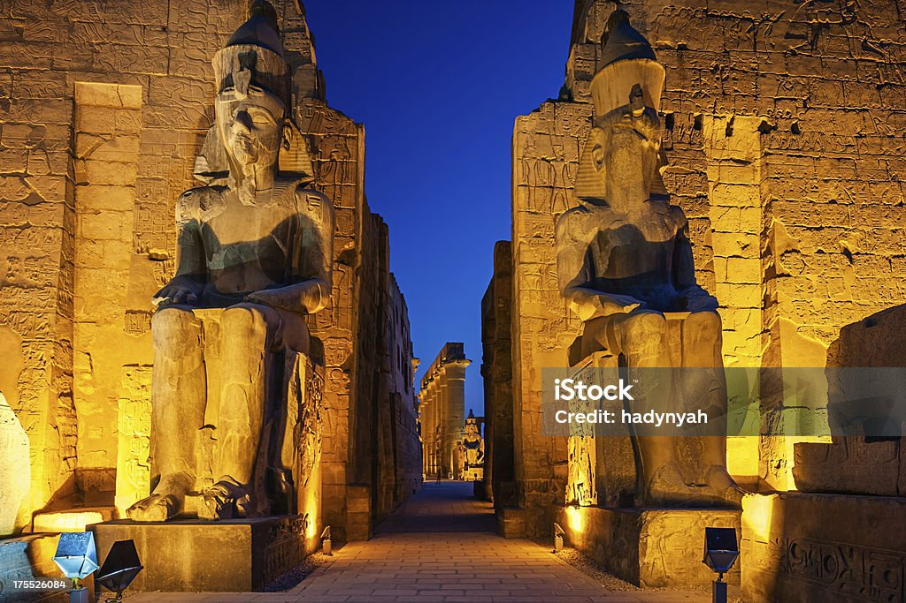

Hot air ballon ride
Felucca ride on the Nile
Visit the Temples

Felucca ride on the Nile
Ancient Egypt üè∫ comes alive in Luxor, a city that stands as an open-air museum, overflowing with the treasures of Pharaonic civilization üëë. Here, the grandeur of temples like Karnak and Luxor stands tall, bearing witness to the glories of the past and the might of the Pharaohs. Along the banks of the Nile üåä, Luxor narrates tales thousands of years old, taking its visitors on an enchanting journey through history.From the Valley of the Kings ìãû, where the secrets of the Pharaohs rest, to the Valley of the Queens, every corner whispers a new story of unparalleled glory, art, and architecture.A visit to Luxor is an exploration of the eternal soul of Egypt.
 The Karnak Temple Complex is the largest religious building ever constructed and a monumental tribute to the Egyptian gods.Dedicated primarily to the Theban Triad, with Amun-Ra as its chief deity, Karnak was built and expanded over a period of morethan 1,000 years. Its highlight is the awe-inspiring Great Hypostyle Hall, a forest of 134 massive columns that soar to the sky, creating a breathtaking display of ancient engineering and architecture. Walking through Karnak offers a profound sense of scale,representing the accumulated devotion and power of Egypt’s New Kingdom pharaohs.
Located on the West Bank, the Valley of the Kings served as the royal necropolis for pharaohs, queens,
and high priests of the New Kingdom.To protect their treasures and eternal rest, kings like Tutankhamun
and Ramses II were buried in deep, rock-cut tombs instead of pyramids. A visit to the Valley offers a
unique opportunity to descend into the earth and explore these meticulously decorated subterranean chambers.
The vibrant, well-preserved murals and hieroglyphs inside the tombs detail the religious beliefs, mythology,
and elaborate preparations for the journey into the afterlife.
Strategically located on the East Bank near the city center, Luxor Temple is an elegant complex dedicated to
the rejuvenation of kingship. Unlike other temples, its function was not for a cult god but for the rituals of
the annual Opet Festival, which reaffirmed the pharaoh's divine authority. The temple's grand entrance, flanked
by colossal statues of Ramses II and a towering obelisk, is a magnificent sight. For the most magical experience,
visit the temple after sunset, when it is dramatically illuminated, highlighting its soaring columns and connecting
it visually to the partially restored Avenue of Sphinxes leading towards Karnak.
Hot air ballon ride
Felucca ride on the Nile
Visit the Temples
Felucca ride on the Nile
Hurry up! Book your trip now!✈️
| Activity | Price (Egyptians) | Price (Foreigners) |
|---|---|---|
| Hot Air Balloon Ride | EGP 2,000 | USD 80 |
| Felucca Ride on the Nile | EGP 150 | USD 10 |
| Visit Luxor Museum | EGP 100 | USD 10 |
| Visit Karnak Temple | EGP 60 | USD 12 |
| Visit Valley of the Kings | EGP 100 | USD 15 |